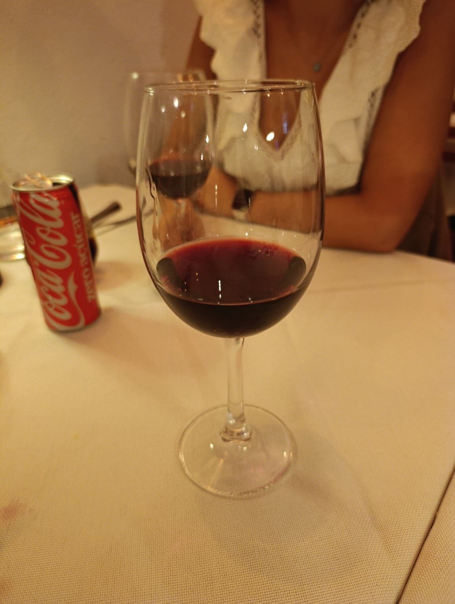
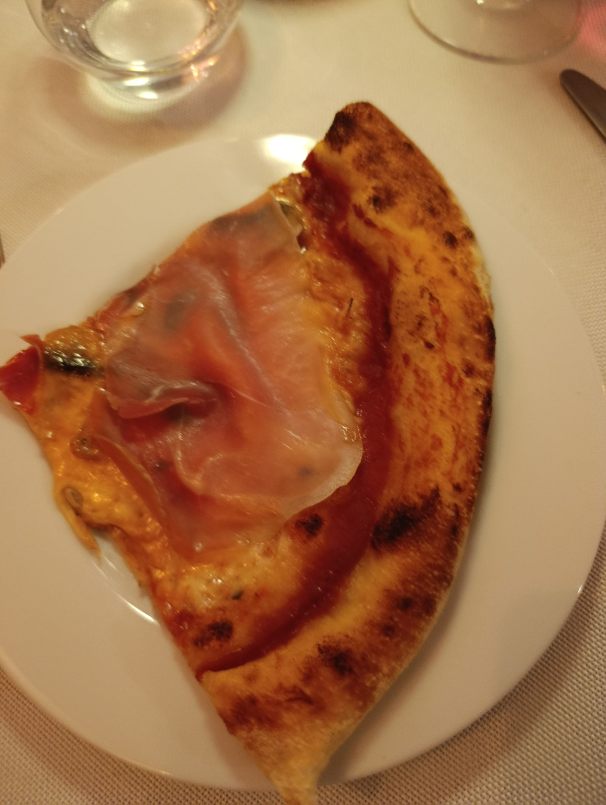
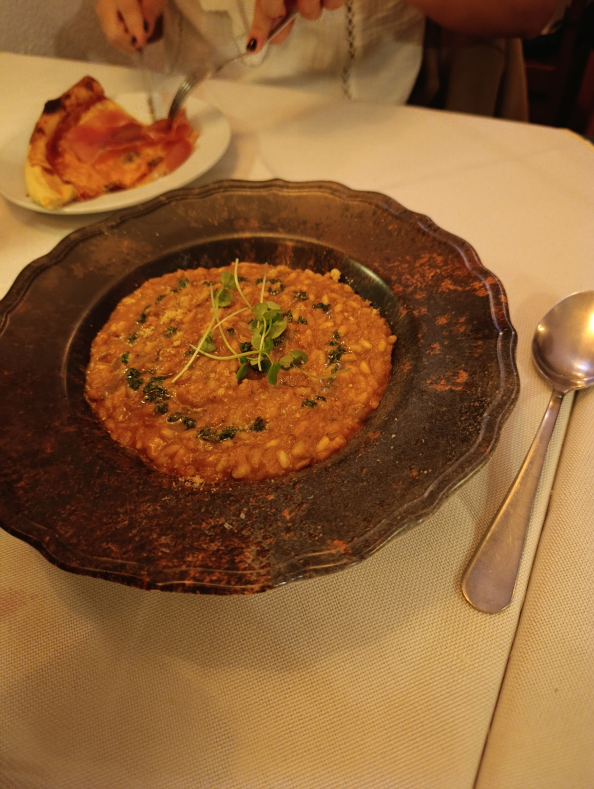
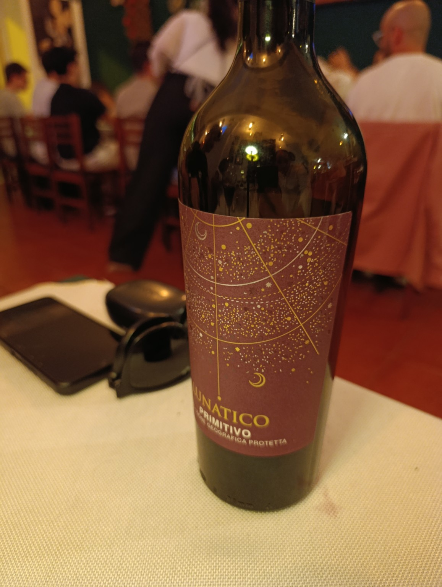

01.
Arancini
O primeiro capítulo do jantar.
Quatro amigos, uma mesa italiana
e um vinho daqueles.
Uma noite no Il Monello.

Começámos pelos arancini e pela focaccia. Depois vieram a pizza de figo, a carbonara e dois risottos: trufa e ragù. A nossa mesa, em seis pequenos capítulos.
Ilustrações do menu · fotografias da nossa mesa
Antes de se tornar uma memória,
foi isto: comida boa à nossa frente.



O Carlos é enólogo. Quando chegou a hora de escolher o vinho, a decisão ficou com ele: Lunatico Primitivo. E que escolha fantástica.
Os pratos entram na história.
Mas são estas quatro pessoas
que lhe dão um lugar na memória.
Escolheu o Lunatico Primitivo. A escolha do vinho ficou em boas mãos.
Um jantar com amigos, agora também guardado nesta pequena página.
Parte deste quarteto e desta noite no Il Monello.
Casou-se há umas semanas e fez a lua de mel nos Estados Unidos. Um brinde especial!
À Catarina, ao vinho do Carlos
e a voltarmos a juntar-nos à mesa.